BLOGS
BLOG 5 - Diabetes Classifier based on Naive bayes
In this blog we will be learning about the Diabetes Classifier that I built based on Naive Bayes Classifier.
The link to my complete code in Google colab
Naive Bayes classifier is classification algorithm based on Bayes Theorem.Bayes’ Theorem finds the probability of an event occurring given the probability of another event that has already occurred.
I am importing the dataset directly from the Kaggle webbsite.This dataset is originally from the National Institute of Diabetes and Digestive and Kidney Diseases. The objective is to predict based on diagnostic measurements whether a patient has diabetes.
Several constraints were placed on the selection of these instances from a larger database. In particular, all patients here are females at least 21 years old.
1) Pregnancies: Number of times pregnant 2) Glucose: Plasma glucose concentration a 2 hours in an oral glucose tolerance test 3) BloodPressure: Diastolic blood pressure (mm Hg) 4) SkinThickness: Triceps skin fold thickness (mm) 5) Insulin: 2-Hour serum insulin (mu U/ml) 6) BMI: Body mass index (weight in kg/(height in m)^2) 7) DiabetesPedigreeFunction: Diabetes pedigree function 8) Age: Age (years) 9) Outcome: Class variable (0 for Non-Diabetic or 1 for Diabetic)
From the above output we can see that there are 2000 rows and 9 columns. This is what can be called as Curse of dimensionality
CURSE OF DIMENSIONALITY : Machine learning excels at analyzing data with many dimensions, but it becomes more challenging to create meaningful models as the number of rows is a way higher than the number of columns
we can use the .describe() for that

Now, to check the different features of the dataset and the datatypes of it, we can use .info()
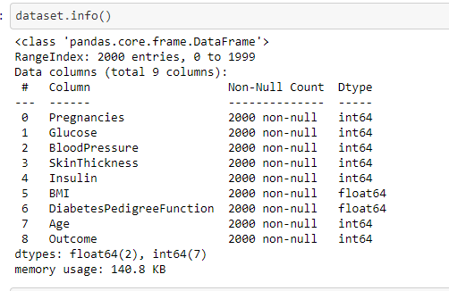We also should check if there are any null values in the dataset for the respective features
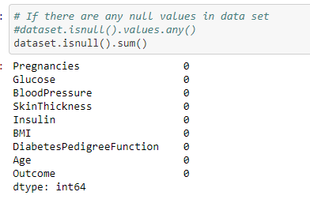From the above output we can see that there are no missing values in the dataset.We can consider the values zero in features as missing values and should be imputed before applying it to the classifier.Because Naive Bayes classifier is susceptible to missing values.
Histogram
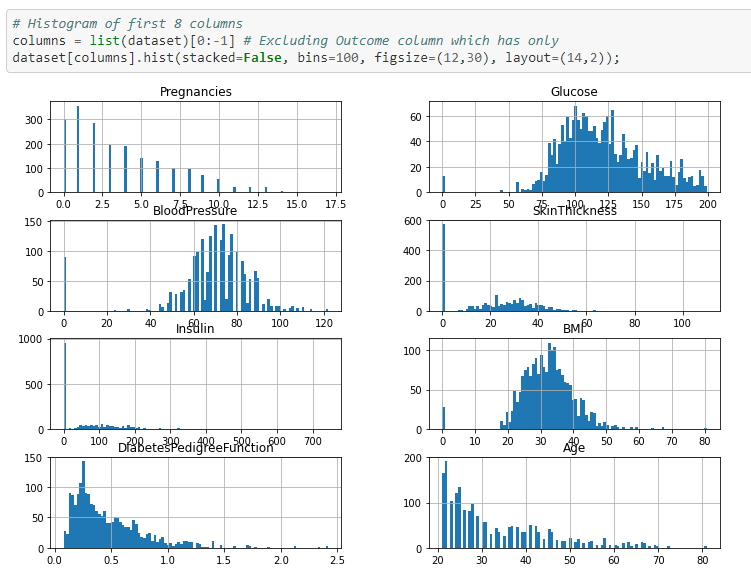The following can be inferred from the above histogram 1) Number of pregnancies is a discrete variable and it is left skewed. 2) Glucose ,Blood pressure and BMI features are continuous variables and are normally distributed, so it will work well with naive bayes algorithm. 3) Diabets Pedigree function feature is left skewed. 4) Age feature is left skewed and is more of a discrete variable
This step is done inorder to identify dependency or correlation between the independent features. Naive Bayes classifier assumes that the predictor variables are mutually independent of each other ie there should no or less correlation between the independent variables.
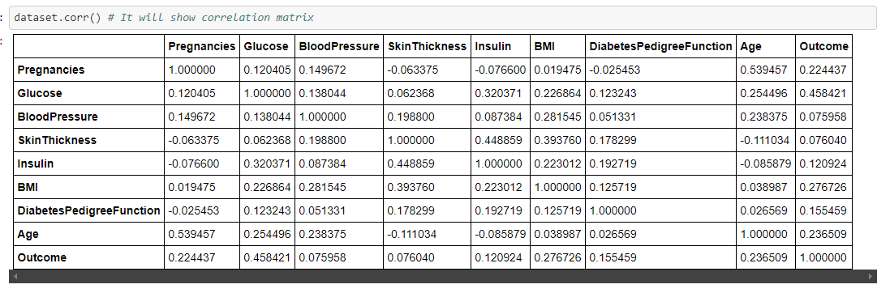However we want to see correlation in graphical representation so we can use Heatmap function for detecting the correlation
HeatMap
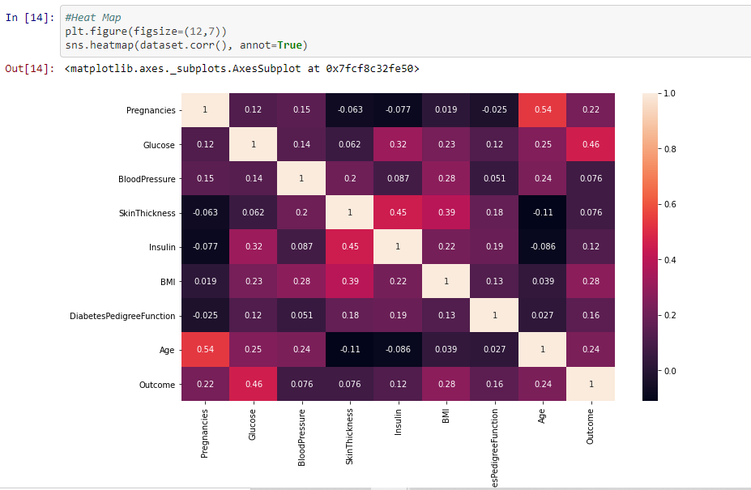From the above we can see that most of the features are not correlated but Insulin and skin thickness,Age and Pregnancies have high positive correlation
Pairplot - to detect the correlation between independent variable using graphs or plots
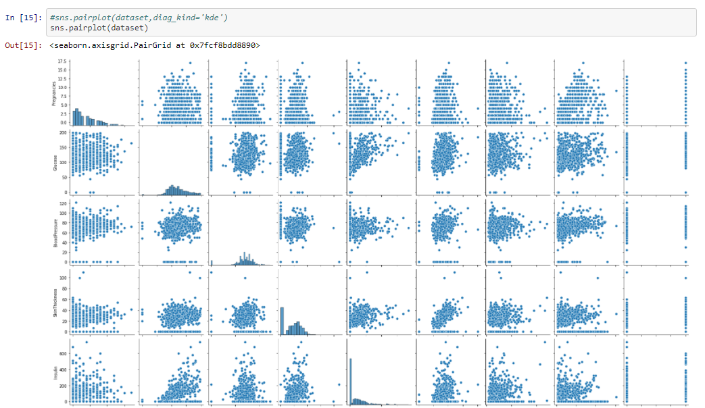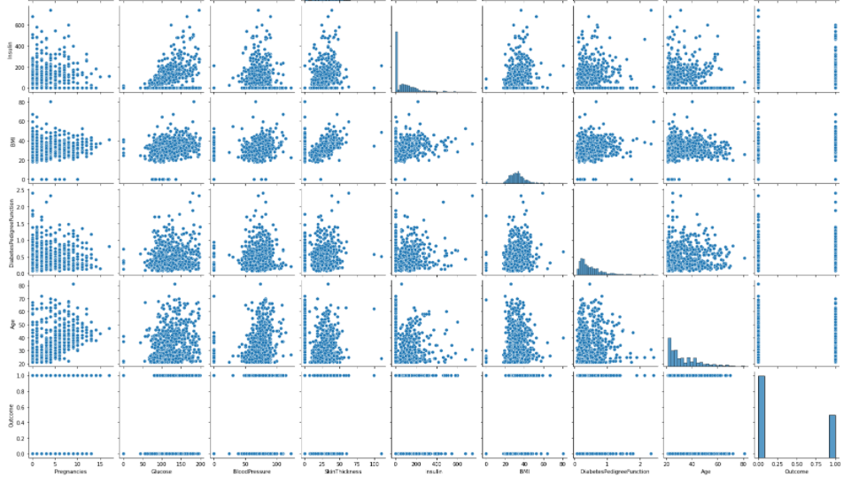
From the above graph we can conform that Insulin and skin thickness, Age and Pregnancies have high positive correlation or highly correlated. The Problem of correlation between independent variables can be overcomed by feature Engineering.
In this step we will be checking for outliers in the dataset for the each individual features
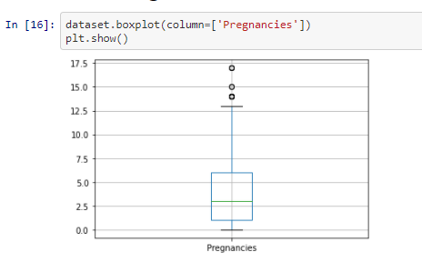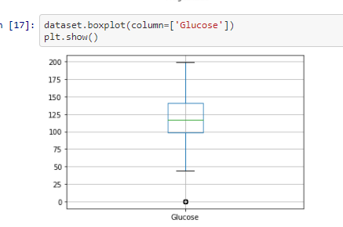
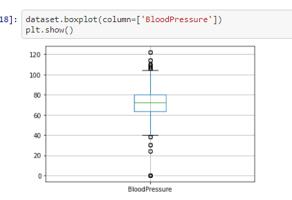
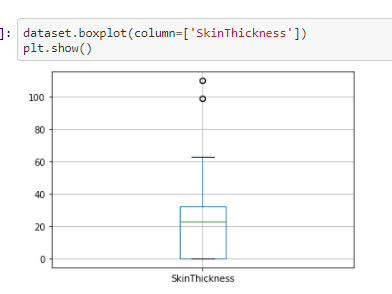
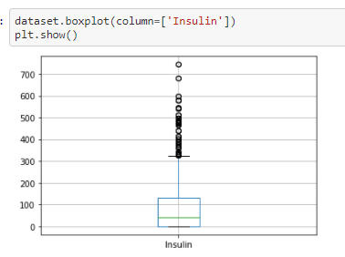
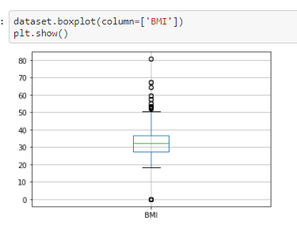
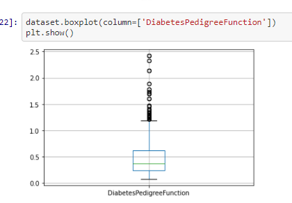
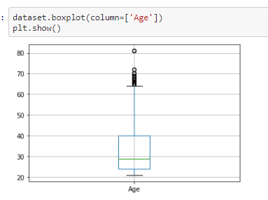
From the above box-plotes we can see that all the features have outliers in them. The black dots in each box-plots are the outliers
Inorder to improve the model performance and make it stable, we need to remove the outliers which is what we will be doing in this next step
We will be using the function remove_outlier for the removal of outliers
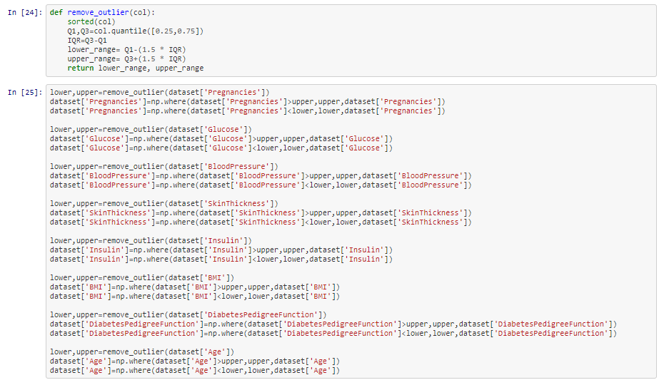We will be plotting the box plot again to check whether the outliers were removed properly
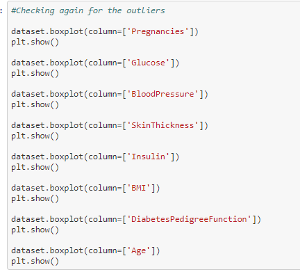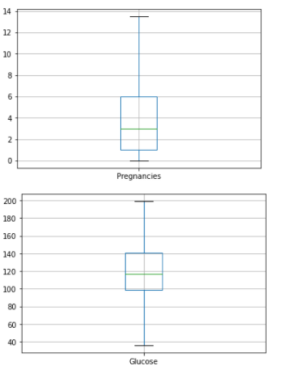
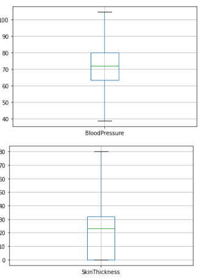
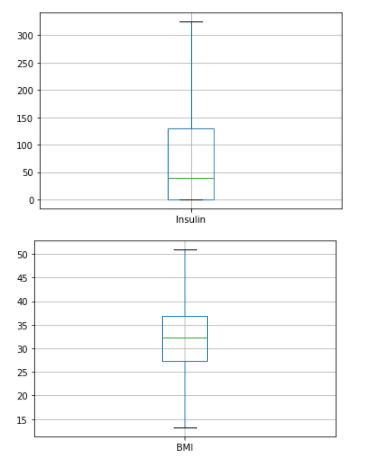
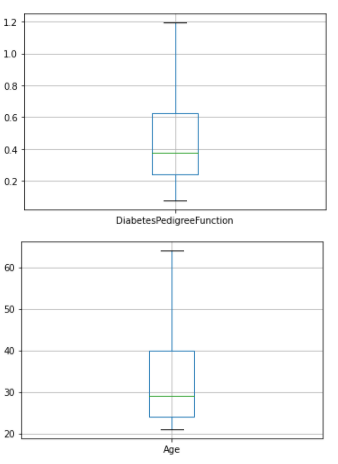
From the above box plots we can see that all the outliers have been removed successfully
Data Preparation-Check hidden missing values As we checked missing values earlier but haven't got any. But there can be lots of entries with 0 values. We must need to take care of those as well since Naive Bayes classifier is very sensitive to zero values in dataset.
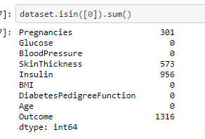From the above output we can see that there are zero values in number of Pregnancies, SkinThickness and Insulin. But, logically the number of pregnancies can be zero whereas the skinthickness and insulin cannot have the value zero and therefore needs to be imputed with median value.
The code for replacing the empty values with median value
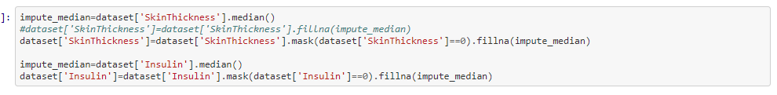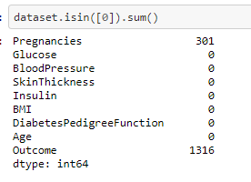
From the above output we can see that except the number of pregnancies feature we dont have any zeros in the other fetaure
So we have 34.20% people in current data set who have diabetes and rest of 65.80% doesn't have diabetes.
There is a slight data imbalance in the dataset which can be overcomed by SMOTE technique, which we can try it on experimentation section
X indicates set of independent variables and Y indicates dependent variable. I will use 70% of data for training and 30% for testing.
we are using sklearn model selection to split the dataset into train and test set
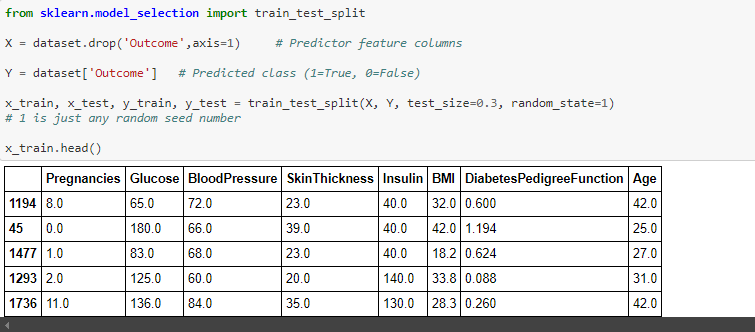Lets check split of data
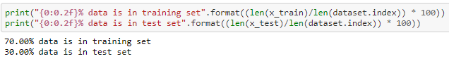Now lets check diabetes True/False ratio in split data
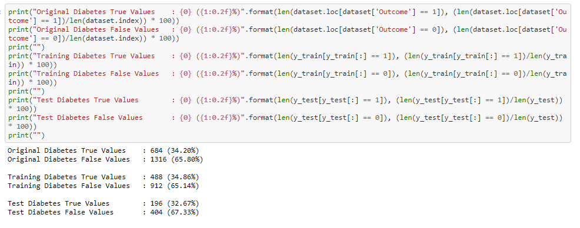The Probability of outcome in the Naive bayes model where if the probability value of zero occuring is higher the prediction will be 0 -> is non-diabetic and if Probability of 1 occuring is higer then the outcome will be 1 -> is Diabetic.
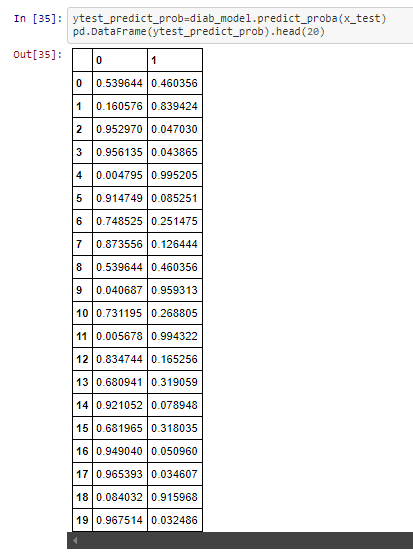From the above Probability output in the first column 0.601113 > 0.398887 , therefor the Outcome of the prediction will be 1, as you can see which is the same from the below output
The outcome of the Naive bayes classifier.
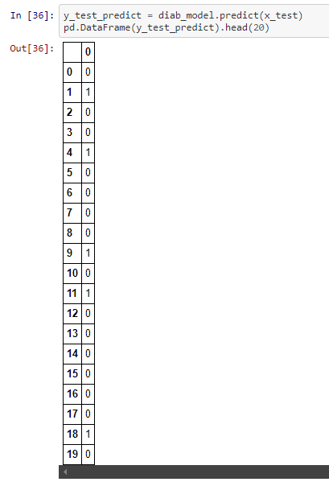Performance Matrix on train data set
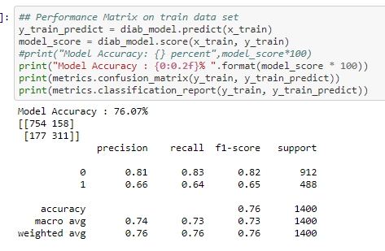The Recall and precision score indicate that it is a good model for the diabetes dataset
So, the total number of correct predictions done by the model = 754+311 = 1065
So, the total number of incorrect predictions done by the model = 158+177 = 335
Since the number of correct predictions is higher than the incorrect predictions the model works well in the training data
Performance Matrix on test data set

The Recall and precision score indicate that it is a good model for the diabetes dataset
So, the total number of correct predictions done by the model = 324+132 = 456
So, the total number of incorrect predictions done by the model = 80+64 = 144
Since the number of correct predictions is higher than the incorrect predictions the model works well in the test data
From the above output from the performance of the model from training and testing dataset, we can say that the model has no overfitting or underfitting
Earlier we saw that there was a slight data imbalance in the dataset which might affect the accuracy of the model. This can be overcomed by SMOTE technique.
SMOTE--> Synthetic Minority Oversampling (SMOTE) works by creating synthetic observations based upon the existing minority observations
we are importing the SMOTE function and resampling x and y value
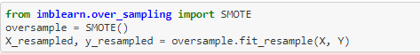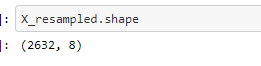
we will then train the resampled x value with naive Bayes
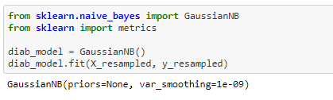Performance Matrix on train data set with SMOTE

Performance Matrix on test data set with SMOTE
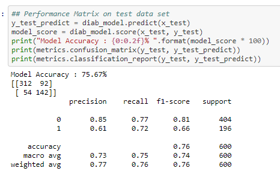To increase the accuracy of the training set. We are using 10 folds for the cross validation
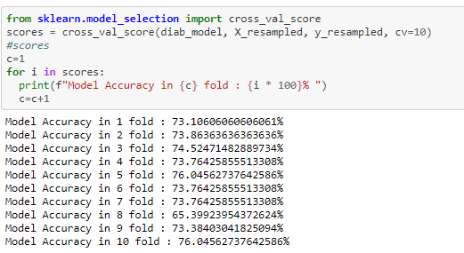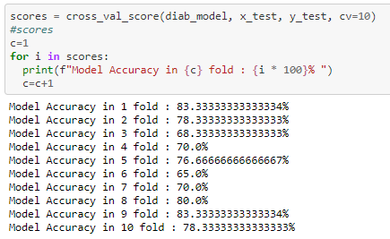
From the above 10 fold cross validation we can infer that the test score has improved from the initial 76% to 83%
I tried to improve the accuracy score by using SMOTE technique and K fold cross validation. from the above experimentation we can see that while using the 10 fold cross validation has improved the accuracy score to 83%
Please find below the references I used to understand the concept and build the code
1) To understand the indepth concept of Naive Bayes
2) To generate confusion matrix and classification report.
3) To understand the concept of SMOTE technique
4) Concept of K-fold cross validation
BLOG 4 - Sentiment analysis on IMDB reviews using NBC-Naive Bayes Classifier
In this blog we will be learning about the concept of Naive bayes where we will be performing Sentiment Analysis on reviews from IMDB website.First lets see the basic concept of Naive Bayes.
The link to my complete code in Google colab
Naive Bayes classifier is classification algorithm based on Bayes Theorem.Bayes’ Theorem finds the probability of an event occurring given the probability of another event that has already occurred. Bayes’ theorem is stated mathematically as the following equation:
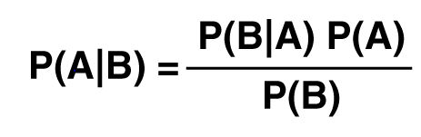P(A|B)-- Probability of Event A occuring given Event B has already occured P(B|A)-- Probability of Event B occuring given Event A has already occured P(A)-- Probability of Event A P(B)-- Probability of Event B
The fundamental Naive Bayes assumption is that each feature makes an equal and independent contribution to the outcome.In relation to our dataset we assume that no pair of features are dependent and each feature is given the same weight(or importance).
Naive Bayes is naive because of its assumption of the conditional independence because it is almost never true in the real world. Naive Bayes classifier can make decisions with partial information about attributes, even in absence of information about any attributes we can use Apriori probabilities of class variable.
I am importing the dataset directly from the Kaggle webbsite.This dataset was created for the Paper 'From Group to Individual Labels using Deep Features', Kotzias et. al,. KDD 2015 It contains sentences labelled with a positive or negative sentiment.
Format : sentence \t score Details : Score is either 1 (for positive) or 0 (for negative)
The IMDB dataset consists of 500 positive and 500 negative sentences. Those were selected randomly for larger datasets of reviews. We attempted to select sentences that have a clearly positive or negative connotaton, the goal was for no neutral sentences to be selected.
Looking at the sample of data on how it looks.We can see that it contains two columns Review and Sentiment. The corresponding reviews have sentiment either 0/1(negative/positive)
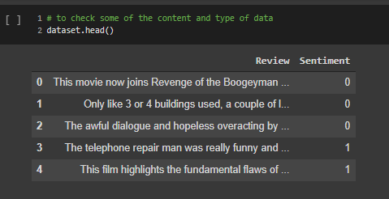Before dividing into test and training sets, we need to pre-process the data, so we can use it directly. we will be removing special characters and replacing them with spaces. Pre-processing is very much required as dataset consists of many special characters like /,.'' and numbers. If we dont remove those special characters the vocabulay word count that we will be doing in the subsequent steps would not work properly.
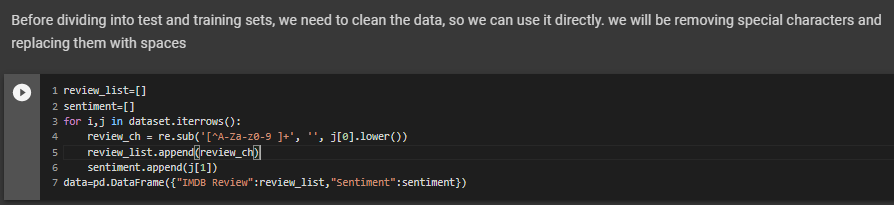The dataset looks like below after the data is pre-processed and removed of all special characters
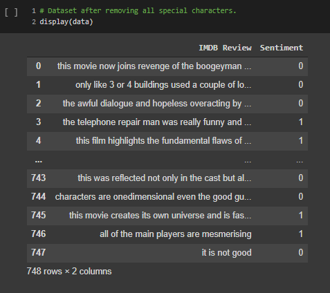Setting up the training, development (dev) and test sets has a huge impact on productivity or accuracy of the model. It is important to choose sets from the same distribution and it must be taken randomly from the dataset. Best practice is to split it to 80:10:10--> 80% train,10% test and 10% dev
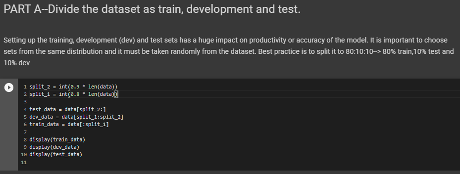For the vocabulary builder , we will be having three values against each word.the first value is the count of occurance of the word in a negative(0) review , the second value is the count of occurance of the word in a Positive(1) review and third value is the total count of that word in all reviews. We also omit the rare words for which the occurance is less than 5 times(which we will be passing as parameter to the function). We will be using the function vocabulary_build() for the vocabulary builder
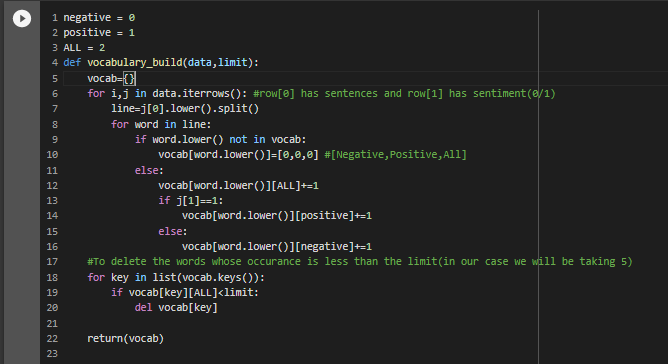The output of the above function will look like below:

The function word_probability that we have used takes two argument one is the dataset or the dataframe and a word for which we need to find the probability of occurance in the document.For this the formula we use P(Word)=(num of times the word occures in the document / Total number of words in the documents).
So, in this function what we are doing is reading the stentences from the data and splitting each sentences and storing it in an array.If we find the required word in the sentence array then we are incrementing the count by 1. Then finally divide the count by the length of the data(which is the total number of words in the document) will give the probablity of the occurance of the word.
The below code is for finding the probability of occurance for all the words in the document.
and its few of the output shown below
In this step we will be finding the conditional probablity.The sentiment_probability is a function which is dependent on another function count_all which is used to find the count of all positive and negative sentiment in the given dataset
The formula for finding the conditional probablity is P(word|Sentiment)= (P(Sentiment|word)*P(word))//P(Sentiment)
The count array contains the count of all positive and negative sentiment in the dataset.If the sentiment passed is 1 then respective count value is given to the count.If the sentiment passed is 0 then respective count value is given to the count.Then applying the above formulla we can get conditional probablity of the desired word for given sentiment.

We will be conducting the five fold cross validation
K-Fold Cross Validation is a concept where a given data set is divided into a K number of fold or sections where each fold is used as a testing set. In our scenario we will be performing the 5-Fold cross validation(k=5).Here, the data set is split into 5 folds.In the first iteration, the first fold will be used as test model and the rest 4 folds will be used for training. In the second iteration, 2nd fold is used as the testing set while the rest serve as the training set. This process is repeated until each fold of the 5 folds have been used as the testing set.
In the Kfold_accuracy function first calculation of the fold size is done by dividing the size of data by the value of K.Thus if the data size is 100 and k is 5 each fold contains 20 sentences.

Some of the output below for the 5 folds validation
The zero probability problem in Naïve Bayes, where the entire expression becomes zero if one of the conditional probabilities is zero, can be handeled by using Laplace smoothing.The smoothing technique that has been used here is the Laplace estimate which uses alpha as the smoothing parameter.
If the alpha value is zero then there will not be any smoothing and the probablity will be zero if any of the feature doesnt have a value,but if alpha value is set to 1, then even though any feature value is missing the probability will not become zero.
The cal_accuracy function depends on predict function.The predict function takes 4 arguments the review, vocabulary, label_count, lam(the smoothing parameter).The role of the predict function is to calculate the probability -> prob += ((vocabulary[word][label]+lam) / (label_count[label]+(lam*len(vocabulary)))), this will find the probablity for both positive sentiment and a negative sentiment.If the negative probablity is greater than the positive probablity then returns 0 else it returns 1.So eventually the predict function predicts the sentiment based on the probability of the word.
After applying smoothing on the test_data the final accuracy comes out to be 60%
Please find below the references I used to understand the concept and build the code
1) To understand the indepth concept of Naive Bayes
2) Different steps in Pre-processing of text data
3) To understand the concept of Smoothing
4) Concept of K-fold cross validation
BLOG 3 - Concept of overfitting
In this blog we will be learning about the concept of overfitting using Higher order linear regression.First lets see the basic definition of overfitting and underfitting.
Overfitting refers to model that models the training data too well. It will even pick the the noise and random fluctuations and lean as concept.When model is too complex, training error is small but test error is large
when Model Complexity > Available Data overfitting occurs
Underfitting occurs when the model or algorithm does not fit the data well enough i.e when the model is to simple
when Model Complexity < Available Data underfitting occurs
The link to my complete code on Google colab
Lets see the each steps that I used to approach the problem where I reduced the loss and increase the performance of the model
In the below code we will be generating 20 sample data points using uniform distribution between 0 and 1 for X.We will sample N from the normal gaussian distribution Then implementing the function y as sin(2.pi.x) .The use of random seed allows us to remove the value of 0 in the normal and uniform distributions.
In this step we will be splitting the sample data points into equal halves of training data and testing data.We had generated 20 data points in the first step, so will be splitting 10 data points of training and 10 data points of test data.
In this step we will find the weights for the orders 1,3,6,9(Higher order).We will be using the training data in this step.I have used pipeline concept in this step, it basically combines many features into a single model.Since I have used Linear regression the Pipeline will encapsulate the linear regression and degrees into a single variable model. We can then train this model to get the weights and get the training and test erros Then from the Model we can fit in the X_train and y_train. We can retrive the weights by means of .coef_ .The output values will be predicted using model.predict function. The RMS is calculated using the mean_squared_error() function.
In this part we will be displaying the weights in a tabular format
From the above table we can see that the magnitude of the coefficients/Weights increases dramatically as the order of the polynomial increases.
In this part we will be plotting the graph between the predicted value and actual input for the different orders that we have used.
In this step we have plotted the graph between Training and test error.
From the above graph we can clearly see that the test error is very high for the degree 9. Our goal is to reduce that test error for higher order functions.
This is similar to the first step that we did for the sample data generation, I have just increased the number of sample points. From the graph we can infer that when the number of data points increases then the prediction is almost accurate to the actual data.
we have plotted the Samples Actual Value and Predicted value graphs for all the lambda values.The errors are calculated in the previous step

From the above plot we can see that the for 0.001 lambda value the test error id very less. So, After experimentation the best model with the low test error is with lambda value of 0.001
The challenge that I faced while doing this code was, I was not able to implement the Regularization concept even though I understood the need of regularization or what it is therotically.
Please find below the references I used to understand the concept and build the code.
1)Understanding underfitting vs overfitting using scikitlearn
2) Numpy documentation- To understand the concepts of random.uniform and random.normal functions which was used to generate the data(x,y)
3) Used this blog understand the Regularization Concept
4) w3school webiste to understand the concept of plotting graphs
BLOG 2 - Training an image classifier using CNN on the CIFAR-10 dataset
We will be building an image classifier using CNN(convolutional Neural Net) on the famous dataset--The CIFAR-10 dataset. Please find below the complete guide with code and various steps involved from downloading the dataset to building ,training and testing the model
The link to my complete code on Google colab
Lets see the each steps that I used to approach the problem where I improved my accuracy from 54% to 71%
Data exploration is one of the most important step in any machine learning problem. If you understand your data well, we have half the solution since you will be building the model depending on the data. Before starting to work on any dataset, how many classes are there and what the images look like, what is the size of dataset Here, in the CIFAR-10 dataset,
1)Images are of size 32X32X3 (32X32 pixels and 3 colour channels namely RGB(Red-Green-Blue)
2)There are 10 classes. (classes = ('plane', 'car', 'bird', 'cat','deer', 'dog', 'frog', 'horse', 'ship', 'truck')
3)The dataset consists of 60000 with 6000 images per class.
4)There are 50000 training images (this means we get 5000 images per class for training our NN) and 10000 test images.
We can download the dataset train and test datasets as follows:
The code to check some images from the dataset
Now, we will create a basic model for solving our classification problem. We will be building using the nn.Module class already provided by PyTorch, it contains the initialization and forward methods.
For training our model we need to form batches of images from our dataset, so we will be using the DataLoader() function provided by PyTorch. DataLoader gives us a dynamic environment to create the batches and makes our data easily iterable.
In this code, I have implemented three convolution layers and five linear layers
Initially I ran the program on CPU, since the number of networks and layer was very small and the epoch times was just two times. But once I started experimenting by increasing the number of convolution and linear layer and the epoch times, the program started running for more than 10 minutes which was very time consuming. That’s when I got the idea of using GPUs instead of CPUs for training the network, as it will be faster, and the CPU will be free to perform other processes.
To enable GPU in our Google Colab, we need to select the following option Runtime-->change runtime type.
For the GPU to work we need to send the inputs and targets at every step to the GPU too and the model must be in GPU as well.We need to make the below changes in the code for the GPU to work
After doing this you will notice a massive speed up in your training of network.
The loss function used is the cross-entropy loss which has in-built negative log likelihood loss and softmax also, which can be easily used for the classification task. The optimizer was initially used with SGD(Stochastic gradient descent) but I am experimenting with various other optimizers like Adam(Adaptive Moment Estimation), Adagrad,Rprop,RMSprop and fine tuning it to improve the accuracy.
In this step we just need to loop over our data iterator, and feed the inputs to the network and optimize.Finally we save the trained model.
This is the final step, we have built our model, trained the model, this step is to test our model and how accurate it is on our prediction.
The below output will show the average accuracy of the network and the accuracy of each classes.

The Average accuracy of the Network
The Average of each classes
•Using GPU will save a lot of training time when compared to CPU, when you increase the Convolutional, linear layers layer and the epoch times.
• When I used SGD as optimizer, it was very slow as it oscillates when there are deep sides. But using Adam (Adaptive Moment Estimation) the learning was better and fast, it took a smaller number of epochs to train the network, its adaptive learning rate, bias-correction and momentum make it a good choice.
• You can change the number of epochs, more epochs mean more training and better the model in its accuracy.
Please find below the different trials that I did using different models,changing the layers and the parameters
Please find below the references I used to understand the concept and build this model
1) Pytorch tutorial for Image classifier
In this tutorial a basic Neural Net(2x3 2-convolution,3-Linear) was used and SGD was used as an optimizer. I have experimented by increasing the convolutional and linear layes,using a Adam optimizer,increasing the epoch times and running on GPU for time efficiency. This resulted in improving my accuracy to 71%
3)The CIFAR-10 dataset-for exploratory data analysis
BLOG 1 - Titanic - Machine Learning from Disaster Project from Kaggle Walk Through
In this blog, I hope to show how I worked through the famous Titanic problem in kaggle for Beginners. The goal is to correctly predict if someone survived the Titanic shipwreck.
In this project we need to create a machine learning model that predicts which passengers survived the Titanic shipwreck. In this challenge, I built a predictive model that answers the question: “what sorts of people were more likely to survive?” using passenger data (ie name, age, gender, socio-economic class, etc).
Lets see the each steps that I used to approach the problem where I improved my score of 0.76555 to 0.77511. I am adding my kaggle Notebook that I used for the Project for reference
There are two files that we would be given under the data tab on the top of the competition page. The two files that we use are the : (1) train.csv (2) test.csv
train.csv contains the details of a subset of the passengers on board (891 passengers, where each passenger gets a different row in the table). The values in the second column "Survived" can be used to determine whether each passenger survived or not. If it is '1' - the passenger survived, if '0' the passenger died.
test.csv-- Using the patterns we find in train.csv, we have to predict whether the other 418 passengers on board (in test.csv) survived.
Our prediction submission file must contain only two columns, if we have more than that we will face issue while submission.The file must contain a "PassengerId" column containing the IDs of each passenger from test.csv.A "Survived" column (that we will create!) with a "1" for the rows where we think the passenger survived, and a "0" where we predict that the passenger died.


From the above table we can see that there are lot of null values in Age and Cabin Column and two null values in Embarked Column out of total 891 entries
To better understand the numerical data , we can use the .describe() method.This gives us an understanding of the central tendencies of the data
From the above histogram we can know that the Age is a normal distribution whereas the other features are not normally distributed. So, we might need to normalise the features like Fare, to have its correct contribution during the Prediction
From the above heatmap we can infer some correlations between features. for eg: 1) The number of parents and number of sibilings ie family tend to travel together.2)The Age and the number of siblings(SibSp) has a negative correlation and such. These help us to understand the different relationship in our data.
Even though it might not contribute directly, we might get a understanding of the data like younger people have survived more and the people who paid high fare had high chances of survival. These are the things we need to make note of while building our models.
From the above pivot table we can understand that relatively the lot of people from first class survived,lot of women compared to men were rescued first.We can understand that this feature(sex) will play an important contribution in the prediction.
I have used what's known as a random forest model. This model is constructed of several "trees" that will individually consider each passenger's data and vote on whether the individual survived. Then, the random forest model makes a decision based on majority: the outcome with the most votes wins.The code cell below looks for patterns in four different columns ("Pclass", "Sex", "SibSp", and "Parch") of the data. It constructs the trees in the random forest model based on patterns in the train.csv file, before generating predictions for the passengers in test.csv.
Creating the RandomeForestClassifer model to train and fit the data. After that we predict whether the passengers in the test_data had survived or not(0/1). At the end we load the predictions to prediction_submission.csv.